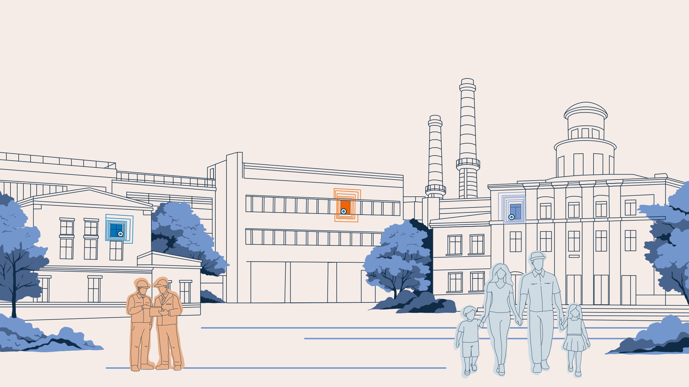
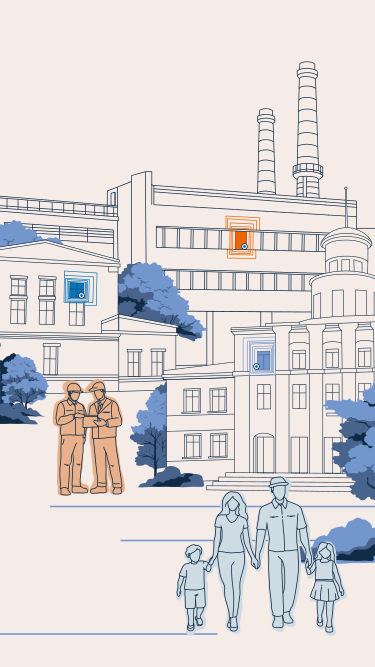
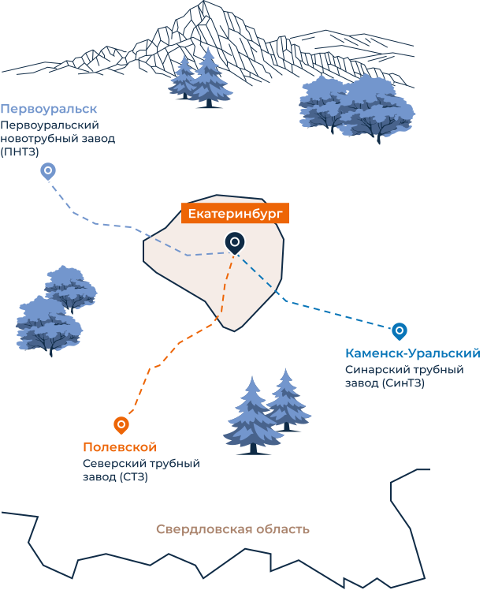

Люди
с характером
Люди с характером
Трудовые династии редко говорят о себе вслух. Их истории живут в семьях, в привычных маршрутах на завод, цехах и выцветших фотографиях. Этот проект — попытка их услышать. Без посредников и комментариев. И сохранить.
Перед вами люди с разных заводов. Они говорят о работе, выборе профессии, о родителях и дедах. Но главное — о жизни за пределами смены. Каждый герой предстает таким, какой он есть. Со своими мыслями, надеждами, мечтами.
У истоков многих династий — не выбор, а порой жестокая необходимость. Вынужденные переезды, утраты, выживание вдали от родных мест. Для кого-то завод стал точкой опоры, чтобы выстоять и идти дальше. В каждой истории тихая, упрямая сила, которую не способна передать сухая официальная хроника.
Проект раскрывается в двух направлениях. С одной стороны, показывает производство через живой человеческий опыт, без стереотипов и штампов. С другой, он возвращает героям их собственные истории, позволяет им увидеть себя со стороны, почувствовать частью чего-то большего.
Фотографии рассказывают свою историю. Архивные снимки удерживают прошлое, современные — свидетельствуют о настоящем. Люди здесь не только на работе. Они дома, за повседневными делами, в местах силы — они живут. В лицах, жестах, привычках разных поколений читается то, что не всегда можно выразить словами.
Эти истории не про ностальгию, а про присутствие. Про тех, кто хранит себя и свое дело несмотря ни на что. У труда есть память. И у этой памяти есть лица. Лица людей с характером.
